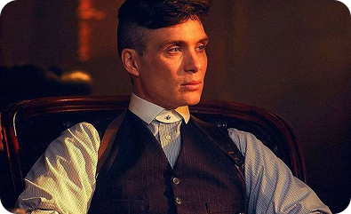

Sob as Cinzas do Passado
Thomas Shelby está sentado na poltrona de sua mansão em Arrow House, planejando os próximos passos do seu império e lidando com ameaças aos negócios da família. Sozinho em seu escritório à noite, cercado por luxo e sombras, ele reflete friamente sobre poder, traições e sobrevivência em meio às guerras de gangues.